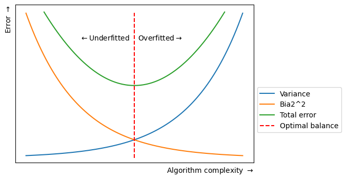
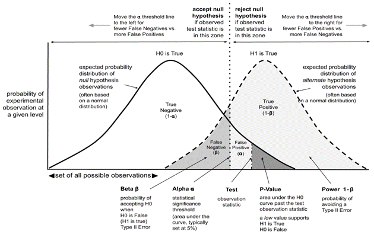

7 Statistics
- Deterministic vs stochastic process: a deterministic process is a mathematical model where the output depends solely on the input, and there is no randomness involved. In contrast, a stochastic process is a mathematical model that involves randomness and is used to model situations that may not have inherent randomness. A deterministic model is completely predictable also.
- Unit root is a feature of some stochastic processes. A linear stochastic process has a unit root if 1 is a root of the process’s characteristic equation. Such a process is non-stationary. If the other roots of the characteristic equation lie inside the unit circle, then the first difference of the process will be stationary; otherwise, the process will need to be differenced multiple times to become stationary.
- Bias is a systematic tendency to underestimate or overestimate the value of a parameter (you were not random!). It implies that the data selection may have been skewed by the collection criteria (in favor or against an idea). It can also be defined as a systematic (built-in) error which makes all values wrong by a certain amount. In ML, the inability for a ML method to capture the true relationship is called bias, that happens because algorithm makes simplified assumptions so that it can easily understand the target function.
| Bias | Error |
|---|---|
| Produces prejudiced results | Results in inaccurate outcomes |
| Identified manually or through software packages | Identified through calculations |
| Occurs systematically | Occurs randomly |
- Normal/uniform distribution is the kind of distribution that has no bias either to the left or to the right and is in the form of a bell-shaped curve. In this distribution, mean is equal to the median.
- Skewed distribution is a distribution where the curve is inclined towards one side.
- Variance is a statistical measurement used to determine the average of each point from the mean (the average of the squared differences from the mean). In ML the difference in fits between training and test sets is called variance, i.e. it refers to the changes in the model when using different portions of the training data set. Simply put, variance is the variability in the model prediction. Standard deviation is the spread of a group of numbers from the mean.
\[ Var(X) = E[X^2] – E[X]^2 \]
| Signs of high bias ML model | Signs of high variance ML model |
|---|---|
| Failure to capture data trends | Noise in data set |
| Underfitting | Overfitting |
| Overly simplified | Complexity |
| High error rate | Forcing data points together |
- Robustness represents the system’s capability to handle differences and variances effectively
- Total error = variance + bias + irreducible error
- Correlation vs covariance: correlation is a measure of relationship between two variables and says how strong are the variables related. Range is -1 to 1. Covariance represents the extent to which the variables change together in a cycle. This explains the systematic relationship between pair of variables where changes in one affect changes in another variable. Range is -inf to +inf, and is affected by scalability.
- Confounding variables are extraneous variables in a statistical model that correlates directly or inversely with both the dependent and the independent variable. Left unchecked, confounding variables can introduce many research biases to your work, causing you to misinterpret your results.
- R-squared/coefficient of determination is a statistical measure in a linear regression model that determines the proportion (percentage) of the variance in the dependent variable that can be explained by the independent variable. In other words, it evaluates the scatter of the data points around the fitted regression line, i.e. shows how well the regression model explains observed data.
\[\begin{aligned} R^{2} &= 1 - \frac{\text{Residual variance}}{\text{Total variance}} \\ &=\frac{\text{Total variance - Residual variance}}{\text{Total variance}} \\ &=\frac{\text{Explained variance}}{\text{Total variance}} \\ &=\text{Fraction of total variance explained} \end{aligned}\]
p-value is the measure of the statistical importance of an observation. We compute the p-value to understand whether the given data really describes the observed effect or not. If p<=0.05 it suggests that there is only 5% chance that the outcomes of an experiment are random and the null hypothesis must be rejected. \[ p_{value} = P(E|H_{0}) \]
The statistical power of a binary hypothesis test is the probability that the test rejects the null hypothesis when a specific alternative hypothesis is true
Confidence interval is a range of values likely containing the population parameter. Confidence level is denoted by 1-\(\alpha\), where \(\alpha\) is level of significance (usually 5%). Point estimate is an estimate of the population parameter (can be derived with Maximum Likelihood estimator for egz.) 
Univariate, bivariate and multivariate analysis: univariate analysis allows us to understand the data and extract patterns and trends out of it. Bivariate analysis allows us to figure out the relationship between the variables. Multivariate analysis allows us to figure out the effects of all other variables (input variables) on a single variable (the output variable).
Sampling is the selection of individual members or a subset of the population to estimate the characters of the whole population. It is useful with datasets that are too large to efficiently analyze in full. There are two types of sampling techniques: probability and non-probability. Resampling is the process of changing/exchanging data samples, identifying the impact of these changes on model and prediction characteristics, and continuing until optimal results are achieved. It is done in cases of estimating the accuracy of sample statistics or validating models by using random subsets to ensure variations are handled (egz. Bootstraping, cross-validation)
Types of biases that can occur during sampling: selection bias, undercoverage bias and survivorship bias. Selection bias occurs when a sample selection does not accurately reflect the target population. Survivorship bias is the logical error of focusing on aspects that support surviving a process and casually overlooking those that did not. This can lead to wrong conclusions in numerous ways.
Bootstrap method is a resampling method by independently sampling with replacement from an existing sample data with same sample size n, and performing inference among these resampled data.
Normalization/Min-Max scaling is used to transform features to be on a similar scale ([0,1] or [-1,1]). It is useful when there are no outliers. \[ X_{new} = (X - X_{min}) / (X_{max} - X_{min}) \] Normalization is useful when your data have different dimensions and the method you’re employing doesn’t make assumptions about the distirbution of you data.
Standardization/Z-score normalization is the transformation of features by subtracting from mean and dividing by standard deviation. It is not affected with outliers since its not bounded to a certain range. Changing the range of your data with scaling is different from changing the distribution of your data with Normalization. Also, standardization presupposes that the distribution of your data is Gaussian. \[ z = \frac{x-\mu}{\sigma}, \] where \(\mu\) represents the mean and \(\sigma\) represents the standard deviation.
The Central limit theorem says that, given a large enough sample size, the distirbution of sample averages/means will be approximtely normal. This means that we can use normal distirbution to make predictions about populations based on samples.
The Law of large numbers is a theorem that describes the result of performing the same experiment very frequently. It states that the sample mean, sample variance, and sample standard deviation converge to what they are trying to estimate
Gradient, for purposes of this paper, measures how much the output of a function changes if you change the inputs a little bit (from a given point).
Categorical, continuous and ordinal variables. An ordinal variable is a categorical variable for which the possible values are ordered.
Histrograms vs boxplots: Boxplots are more often used in comparing several datasets and take less space than histograms. Histograms are used to know and understand the probability distribution underlying a dataset
Histograms vs bar graphs: a bar graph is the graphical representation of categorical data, whereas a histogram is the graphical representation of data where data is grouped into continuous number ranges
Kernel density estimation (KDE) is a method for visualizing the distirbution of observations in dataset over a continuous interval or time period
Histograms vs density plots: an advantage that density plots have over histograms is that they’re better at determining the distribution shape because they are not affected by the number of bins used.
Akaike information Criterion (AIC): is a mathematical method for evaluating how well a model fits the data it was generated from. In statistics, it is used to compare different possible models (model selection). Lower AIC scores are better!
7.1 Time series analysis
Time series analysis (TSA) is a mathematical approach for predicting or forecasting the future pattern of data using historical data arranged in a successive order for a particular time period. statsmodels.tsa package contains model classes and functions that are useful for time series analysis.
Prediction vs forecasting: prediction is concerned with estimating the outcomes of unseen data. Forecasting is a sub-discipline of prediction in which we are making predictions about the future on the basis of time series data, so the only difference is that we consider the temporal dimension
Trend vs season vs cyclic: A trend exists when there is a long-term increase or decrease in the data. It does not have to be linear. A seasonal pattern occurs when a time series is affected by seasonal factors such as the time of the year or the day of the week. Seasonality is always of a fixed and known frequency. A cycle occurs when the data exhibit rises and falls that are not of a fixed frequency.
Rolling average/ moving average is a metric that calculates trends over short periods of time using a set of data. Is uses smaller parts of the data and then rolls or moves for each new period. Calculating next rolling period involves leaving off your earliest unit and adding in your next unit. For egz., if you want to track down monthly data, take 12-months rolling period. After calculating average of 12 months, leave first month and add new month, then calculate average again for new rolling period. In that way, rolling period keeps moving.
Augmented Dickey-Fuller test: tests the null hypothesis that a unit root is present in a time series sample. It is a negative number, and the more negative it is, the stronger the rejection of the hypothesis that there is a unit root at some level of confidence.
There are 3 main versions of the test (Dickey-Fuller test is presented for simplicity):
- Test for a unit root: \(\Delta y_{t} = \delta y_{t-1} + u_{t} \quad(u_{t} \text{ is error term})\)
- Test for a unit root with constant: \(\Delta y_{t} = a_{0} + \delta y_{t-1} + u_{t}\)
- Test for a unit root with constant and deterministic time trend: \(\Delta y_{t} = a_{0} + a_{1}t + \delta y_{t-1} + u_{t}\)
-> Hypothesis: H0: δ = 0 (process is not stationary) H1: δ < 0 (process is stationary)
-> from statsmodels.tsa.stattools import adfuller. For additional parameters, it is the best practice to put autolag=‘AIC’. regression parameter has 4 parameters: ‘c’ for only constant (default), ‘ct’ for constant and trend, ‘ctt’ for constant and linear and quadratic trend, ‘n’ for no constant and no trend.
-> Which version of test to choose? δ needs to be <= 0, so one way to find out is to see if it fits in the right interval. Other way is to compare AIC values and choose lowest. Also by inspecting data we can assume which to choose, but the best way is to perform all 3 types and inspect results.
Stationary time series: the only assumption in TSA is that the data is stationary. Data is stationary when the variance and mean of the series are constant with time, with no periodic component (independent of time influence).
- Check it with Augmented Dickey-Fuller test
- Trend can result in a varying mean over time, wheras seasonality can result in a changing variance over time, both which define a time series as being non-stationary. (stationary datasets are much easier to model).
- Differencing is a widely used data transform for making time series data stationary. Notice that some temporal structures may still exist after performing a differencing operation, such as in the case of a nonlinear trend. The number of times that differencing is performed is called the difference order. DataFrame diff() function can be used.
There are two popular types of non-stationary time series:
- Trend-stationarity time series are those whose mean trend is deterministic. In other words, the mean of the time series changes over time but at a constant rate. The time series is not stationary in the strict sense, but it is stationary in the sense that the trend is stable and predictable
- Difference-stationarity time series have a mean trend that is stochastic. In other words, the mean of the time series changes over time in a random pattern.
Log transform: time series with an exponential distribution can be made linear by taking the logarithm of the values. Log transforms are popular with time series data as they are effective at removing exponential variance
Autocorrelation analysis is used in detecting patterns and checking for randomness. The analysis involves looking at the Autocorrelation Function (ACF) and Partial Autocorrelation Function (PACF) plots.
- Autocorrelation is a mathematical representation of the degree of similarity between a given time series and a lagged version of itself over successive time intervals. ACF function measures and plots the average correlation between data points in time series and previous values of the series measured for different lag lenghts.
- Partial autocorrelation is similar to autocorrelation except that each partial correlation controls for any correlation between observations of a shorter lag length. For egz., at second lag, the PACF measures the correlation between data points at time „t“ with data points at time „t-2“, while the ACF measures the same correlation but after controlling for the correlation between data points at time „t“ with those at time „t-1“.
- from statsmodels.graphics.tsaplots import plot_acf, plot_pacf
- Stationarity of time series can be inspected with ACF plot (along with ADF test). In case the autocorrelations are positive for multiple lags, the series requires further differencing; but if lag 1 autocorrelated itself pretty negatively, then the series is possibly over-differenced
MODELS
AutoRegressive model (AR): it is a linear model where current period values are a sum of past outcomes multiplied by a numeric factor. We denote it as AR(p), where „p“ is called the order of the model and represents the number of lagged values we want to include. p can be determined from PACF plot. For p=1: \[ X_{t} = C + \phi_{1}X_{t-1} + \varepsilon_{t}, \] The coefficient \(\phi_{1}\) is a numeric constant with value between -1 and 1. When multiplied with past value it represents a part which remains in the future. You would choose an AR model if you believe that previous observations have a direct effect on the time series.
Moving Average (MA): it’s a statistic that captures the average change in data series over time. We denote it as MA(q), where „q“ is called the order of the model and represents the number of past forecast errors (or the size of the moving average window). q can be determined from ACF plot. You would choose an MA model if you believe that the errors have a direct effect on the time series.
AutoRegressive Moving Average (ARMA): p,q
AutoRegressive Integrated Moving Average (ARIMA): p,d,q.. where d is the difference order
AutoRegressive Moving Average with eXogeneous factors (ARMAX): exogeneous variables are external data used in forecast (external effects)
Seasonal AutoRegressive Integrated Moving Average (SARIMA): p,d,q,P,D,Q,m.. where m is the number of time steps for a single seasonal period, p,d,q are trend elements and P,D,Q are seasonal elements
Seasonal AutoRegressive Integrated Moving Average with eXogeneous factors (SARIMAX)
STEPS FOR BUILDING ONE OF THESE MODELS:
Check for stationarity of time series and perform differencing if needed. This is because the term „autoregressive“ implies Linear Regression model (using its lags as predictors) and it works well for independent and non-correlated predictors
Determine parameters. It can be done with inspecting acf/pacf plots
Fit the model. Inspect coefficients and P(>|z|) with .summary() function and decide if it is needed for further tuning of parameters
Check residuals for making sure model has captured adequte information from the data (they should look like white noise). If density looks normally distirbuted, model is ready.
Make predictions (using .forecast() or .predict() function)
Evaluate model predictions using common metrics (MAE, RMSE,..)
- Alternatively, use pmdarima package and auto_arima function to automate steps 1 to 3. Be aware that sometimes the manually fitted model is closer to the actual test set
- Alternatively, use plot_diagnostics to automate step 4. Values of good fit:
- Standardized residual: there are no obvious patterns in residuals, with values having a mean of zero
- The KDE curve should be very similar to the normal distribution
- Normal Q-Q: most of the data points should lie on the straight line
- Correlogram: 95% of correlations for lag greater than zero should not be significant
- Suggestion: conduct time series cross-validation to select the best model, i.e. repeat model assessment for different train / test sets
- Pro tip: if data shows exponential trend you can do a log transform before applying a model, then later apply inverse transformation (exponential function)
Useful tips/functions
- Date increment used for a date range: pandas.tseries.offsets.DateOffset